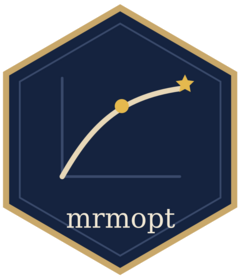

Simulated hierarchical TV sub-channel dataset
mrmopt_hier_data.RdA simulated dataset containing weekly media spend and conversions for eight
TV advertising partners nested within three subtypes (Broadcast, Cable,
Streaming) over two years (104 weeks). The data are generated from Gompertz
response curves with shared structure and unit-level variation, and are
intended for demonstrating hierarchical response curve modeling with
fit_response_hier.
Format
A tibble with 832 rows and 5 columns:
- subtype
Factor. TV subtype:
"Broadcast","Cable", or"Streaming".- partner
Factor. Partner name within the subtype (e.g.,
"Network A","Cable One","Stream Alpha").- week
Date. Week start date (Monday), ranging from 2023-01-02 to 2024-12-23.
- spend
Integer. Weekly media spend in US dollars.
- conversions
Integer. Weekly conversions (KPI).
Details
The hierarchy has two levels:
Broadcast (3 partners): Network A (~$35k/week), Network B (~$28k/week), Network C (~$22k/week)
Cable (2 partners): Cable One (~$15k/week), Cable Two (~$12k/week)
Streaming (3 partners): Stream Alpha (~$10k/week), Stream Beta (~$8k/week), Stream Gamma (~$6k/week)
All partners share a Gompertz curve family with a common floor (c = 40).
Steepness (b), ceiling (d), and midpoint (e) vary by
partner, with partners within the same subtype having more similar parameters.
The dataset is generated by data-raw/mrmopt_hier_data.R.
Examples
data(mrmopt_hier_data)
mrmopt_hier_data
#> # A tibble: 832 × 5
#> subtype partner week spend conversions
#> <fct> <fct> <date> <dbl> <int>
#> 1 Broadcast Network A 2023-01-02 28697 207
#> 2 Broadcast Network A 2023-01-09 40046 309
#> 3 Broadcast Network A 2023-01-16 48440 615
#> 4 Broadcast Network A 2023-01-23 30736 279
#> 5 Broadcast Network A 2023-01-30 29766 465
#> 6 Broadcast Network A 2023-02-06 29779 375
#> 7 Broadcast Network A 2023-02-13 21791 152
#> 8 Broadcast Network A 2023-02-20 23376 87
#> 9 Broadcast Network A 2023-02-27 30683 117
#> 10 Broadcast Network A 2023-03-06 50970 490
#> # ℹ 822 more rows
# Count partners per subtype
table(mrmopt_hier_data$subtype, mrmopt_hier_data$partner)
#>
#> Cable One Cable Two Network A Network B Network C Stream Alpha
#> Broadcast 0 0 104 104 104 0
#> Cable 104 104 0 0 0 0
#> Streaming 0 0 0 0 0 104
#>
#> Stream Beta Stream Gamma
#> Broadcast 0 0
#> Cable 0 0
#> Streaming 104 104